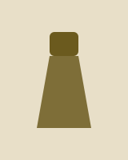
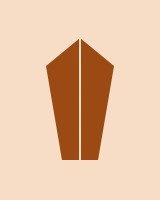

Celebrity Style
Lumen Art + Film Gala Best Dressed: Velvet Capes, Liquid Silver and One Very Brave Feather
Our desk ranks the red-carpet looks that earned a second glance at this year's invented-for-the-occasion gala.
Daily stories from the Stitch & Strut desk: red carpets, runways, real-life outfits and the designers worth knowing. A fictional demo publication.
Celebrity Style
Our desk ranks the red-carpet looks that earned a second glance at this year's invented-for-the-occasion gala.

Street Style
Waxed jackets, bright umbrellas and boots with real tread: the wet-weather uniform has finally become fashionable.
Trend
Structured shoulders are back on blazers, knits and even evening dresses. Here is how to wear them without looking like a costume.
Runway
A single color story, forty looks and a soundtrack of rain: the show was a lesson in restraint.

Black Designers
The young designer turns leftover fabric into limited drops and keeps her studio small on purpose.
What to Wear
Warm layers that still photograph beautifully, from velvet wraps to thermal tights nobody will notice.
Beauty
Dewy complexion plus a velvet-matte color is the contrast of the season. We break down the routine.
Celebrity Style
Travel dressing is a sport, and these five arrivals show the range from sweatsuit to full tailoring.
Video is not included. Each button below is a labeled demonstration.
Black Designers
The young designer turns leftover fabric into limited drops and keeps her studio small on purpose.
Black Designers
From hand-quilted puffers to reversible capes, these independent studios are changing how winter looks.
Black Designers
An inclusive pattern library and made-to-measure pricing without the premium: a studio visit.